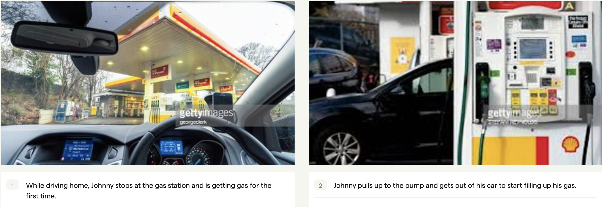
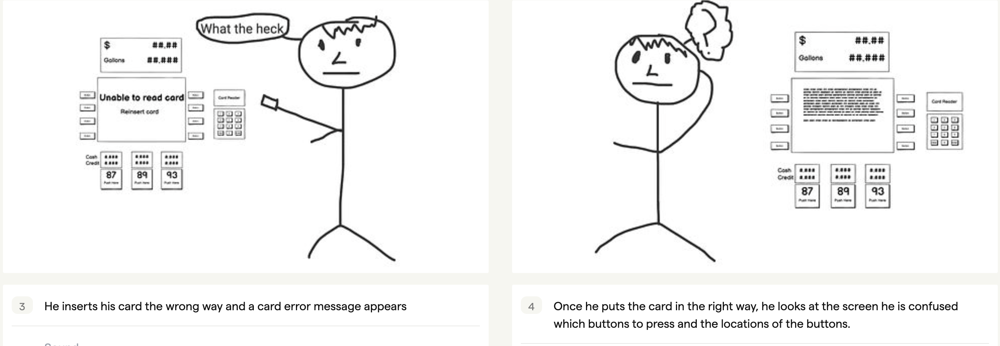
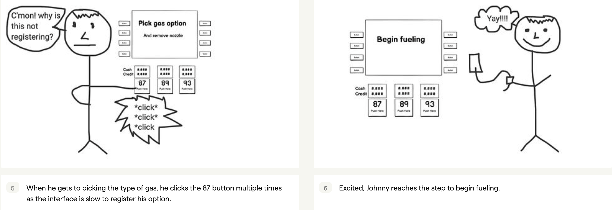
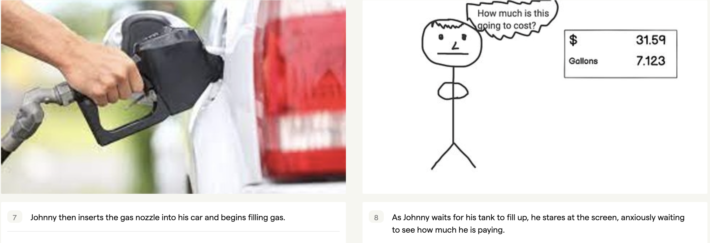
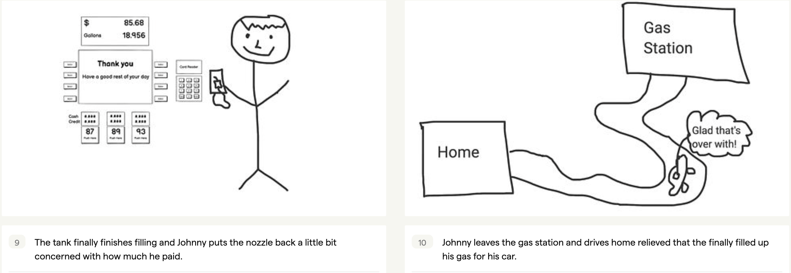

Personas and Storyboarding Project
1. Selected interface is in public view
The selected interface that is in public view that I chose to do is a gas pump.
2. Annotated sketch and description of interface

Above we have a typical gas pump interface. The problem that this interface is trying to solve is the need for an attendant at each pump to guide each user on the steps to fill up their gas tank. There are a good number of moving parts here, but the main components are the main screen, the number pad, the buttons on the side of the screen and the buttons that indicate the type of gas. The main screen will describe the steps on what to do and during certain situations, the buttons on the side of the screen correspond to selections on the screen. When prompted on the main screen, a user will then go use the number pad to type certain information like zip code or card pin. Finally, when prompted to on the main screen, a user will push a button that will indicate the type of gas they want.
3. Observations and interview summaries from 3 users
Interview Questions:
- What do you find difficult about using the interface to fill up your gas?
- What can be improved with the experience?
- What feelings or thoughts do you have while using the interface to fill up your gas?
- What would you say are pros of the gas pump interface?
- Before showing up to a gas pump, what sort of expectations do you have when filling up your gas?
- Users found difficulty with the location of the buttons, in terms of how far they were from the screen and having to keep changing where they look. Others said that some of the instructions were poorly worded.
- In terms of what can be improved, in relation to the previous question, some users indicated that the there was a lot of parts/interfaces to filling up gas and feel that the placement of everything could be better or it should be all one screen, without a lot of buttons. Some mentioned that the experience could be faster because they feel like in between each step there is this slight waiting period for the screen to load the next step.
- Some users said that they had a slight feeling of searching or confusion. Others said that they were slightly frustrated when buttons wouldn’t register the first time or when they were waiting between steps. Some just said that they didn’t mind as they were used to it already.
- Some users said that it was nice to see how much they were spending on a fill of gas. Others liked the control you have on how much gas you get whether that is eyeing the cost/gallons or going inside and telling the attendant how much money they want to spend/how many gallons they want.
- When arriving at a gas station, people’s expectations that they had on the experience were very consistent with each other. Users wanted the experience to be quick and efficient, meaning that they wanted to be in and out when they got gas.
Observations:
- For a lot of users, there is a lot of looking around the interface with a pointed finger and pausing.
- There is a lot of like double clicking on buttons.
- Most users, that are standing by the pump, are staring at the screen that indicates the gallons of gas and how much they are paying.
- Some users go inside to pay with cash instead of paying with card at the pump.
- Some users, when they put the nozzle in, they wait inside of their car on their phones while the gas is filling up.
4. 2 empathy maps with descriptions


5. Storyboard
     *The first two images in stoaryboard were pulled from gettyImages and the last one is from wbtv.com